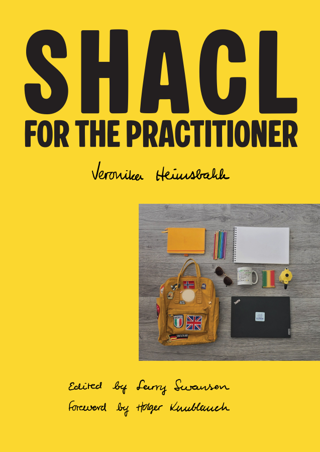

Exploring knowledge graphs through the Shapes Constraint Language. A hands-on guide, written and illustrated by hand.
Get Your Copy
SHACL for the Practitioner guides you from the fundamentals of RDF, semantic technologies and knowledge graphs through the full depth of the Shapes Constraint Language, with hand-drawn illustrations, real code, and stories from production.
Written and illustrated by Veronika Heimsbakk, edited by Larry Swanson, with a foreword by Holger Knublauch, one of the original authors of the SHACL specification. The book is typeset in LaTeX with hand-drawn chapter illustrations traced to vector in Inkscape. Every diagram, every unicorn, every page: crafted with care.
RDF, the Semantic Web, logic and the Resource Description Framework, from scratch.
Shapes, constraint components, SHACL-SPARQL and the SHACL engine explained.
Ten real-world case studies from maritime authorities to railway law.
Exercises, logical puzzles, and companion code on GitHub to put theory into practice.
Three parts, eighteen chapters, plus appendices. From first principles to production-grade stories.
Guest authors share how SHACL drives data-driven value across industries and organizations worldwide.
Reviewed and proofread by leading SHACL experts.
"The material is super useful for anyone working with graph technologies."
"I couldn't ask for a better introduction to this space."
Everything you need to know before ordering.
Common questions about ordering, shipping and the e-book.
Each PDF copy is personally generated with your name watermarked on the file. Due to this manual process, the e-book will not be delivered instantly. Please make sure your e-mail address is correct at checkout.
Paperback copies are shipped from Norway. Due to the costs of distribution as a private person, there is only simplified tracking. The book should be sent 1-3 days after purchase domestically, but international shipments vary depending on customs and location.
Due to customs regulations from the U.S. to Norway, there have been experiences of empty envelopes arriving or shipments lost. Please let the author know if this happens to you.
The author handles distribution personally. There are no straight-out-of-the-box solutions for paying VAT to the buyer's local country. This is highlighted during the purchase process.
Yes! The checkout accepts card and PayPal accounts. If you are not comfortable using PayPal, you can use Vipps (Norway/Sweden) or bank transfer. Reach out directly for details.
Available as paperback and personalised PDF, shipped from Oslo, Norway.
kr 399.00 NOK · Prices in the list below include postage and shipping, not local VAT.
Prefer another method? Get in touch for Vipps or bank transfer.